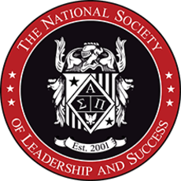

Leyna Chiem
I am a 2nd year business administration major at UC Riverside. My area of concetration is finance, and I am looking to gain experience in the work field. I am seeking a service job where I can apply my one year experience of working for Dining Services. During my one year of work experience, I transported all dirty dishes and utensils from the dining room to dishwashing area for proper cleaning, kept tables neat, cleared away dirty dishes, wiped down surfaces and refreshed glasses. In addition, I completed thorough and accurate opening and closing duties to facilitate smooth restaurant operations, stocked server areas with supplies before, during and after shifts to boost the performance of serving staff, as well as maintained high productivity by efficiently processing credit, debit, meal vouchers, and meal plan program
I am to take on any task to support team needs, knowledgeable about customer service, time management, and cash register. My experience of working at the dining hall will prepare me for any job because I learned to work with people, follow directions, be a team player, and develop my time management skills. These skills that I have picked up will help guide me to success at any given job because I am going to come prepared to complete any task at hand. I also picked up some skills that may be useful for me in the future. I learned about the etiquette of dining customer services, gained a deeper understanding of food safety, became knowledgeable about the cash register operation, and lastly, got knife trained. While working, I was praised by managers for strong work ethic and great responsibility.
Some of my activities and honors include being a candidate for membership in the Society for Collegiate Leadership and Achievement at UC Riverside, an inductee for the Honor Society at UC Riverside, and among the top 20% in student GPA at UCR.
Experience
Student Service Worker
• Transported all dirty dishes and utensils from the dining room to dishwashing area for proper cleaning
• Maintained high productivity by efficiently processing credit, debit, meal vouchers, and meal plan program
• Stocked server areas with supplies before, during and after shifts to boost the performance of serving staff
Secretary
• Maintained journals and arranged appointments
• Organized and serviced meetings
Teaching Assistant
• Reviewed and graded student homework
• Helped teacher with lesson plan
•Assisted students with homework
Education
UC Riverside
Portfolio
